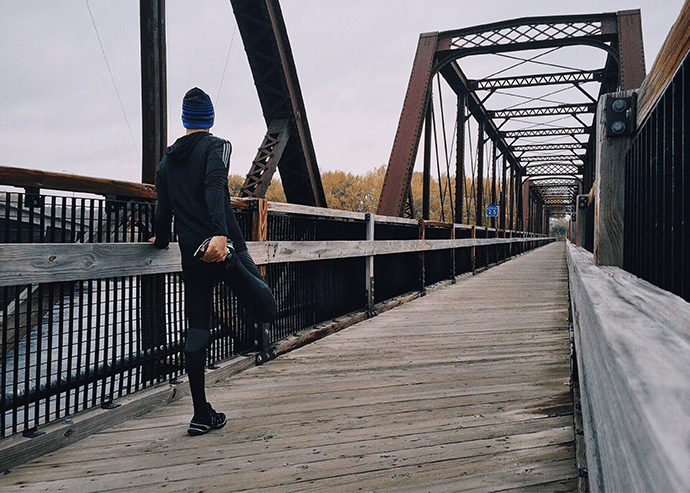
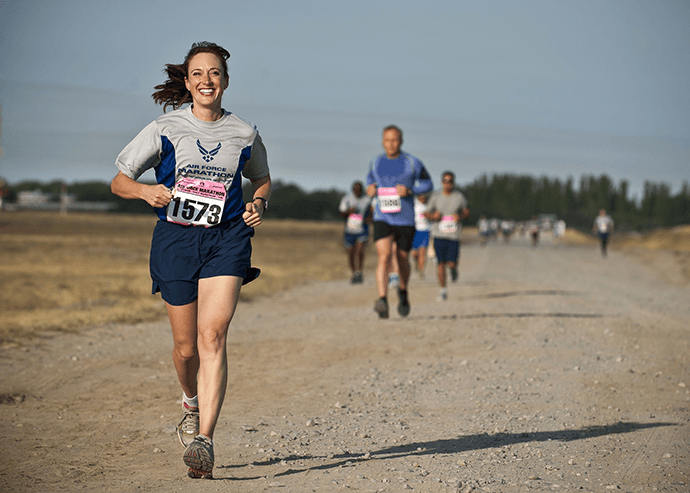
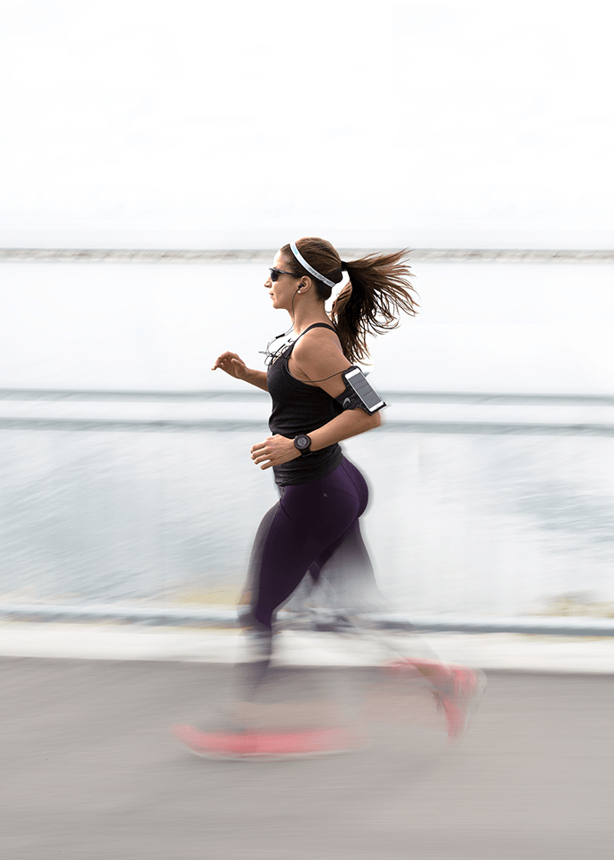
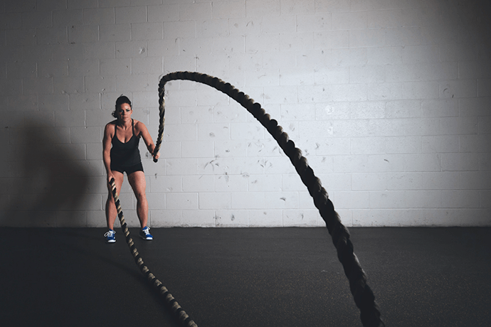
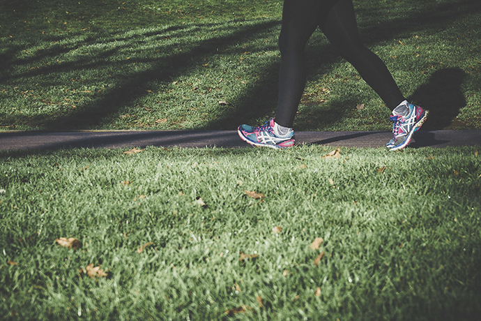
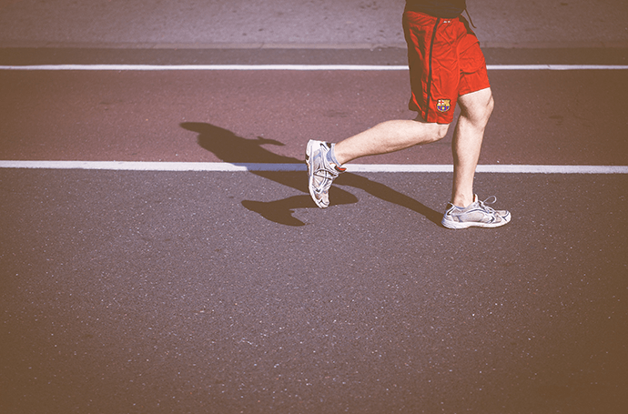
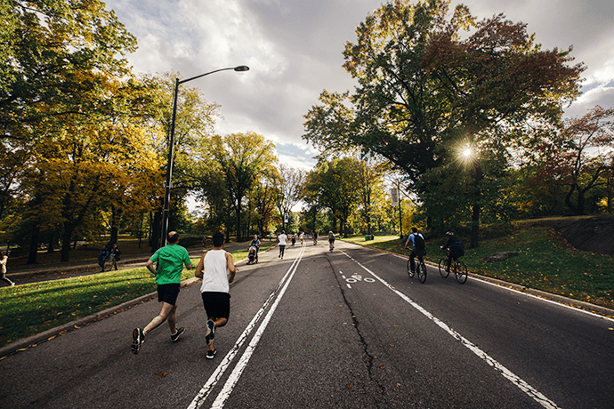
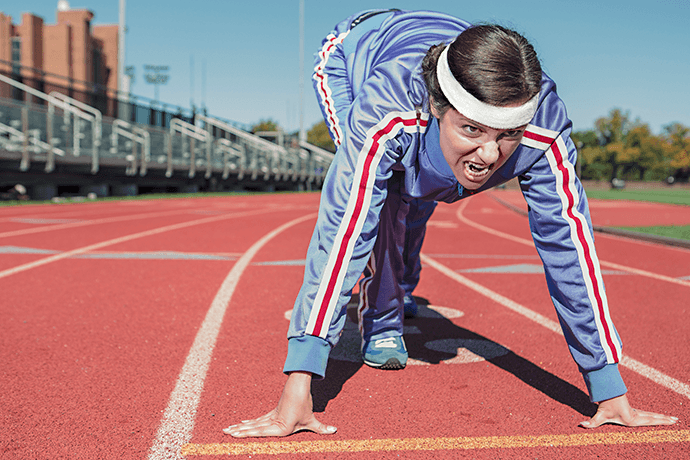

你身上的肥肉总减不下去，怎么办？别着急，减肥其实是个技术活，与其一个劲地节食、吃减肥产品，不如实实在在运动起来。
· 运动够30分钟才能减肥
对于繁忙的上班族来说，每天抽20分钟锻炼，是比较常见的选择。但也有不少人纳闷，为啥我天天坚持运动，可就是不见瘦，有的甚至比以前更胖了？ 之所以坚持运动不瘦反胖，可能是犯了三个错误。
1.有氧锻炼时间在30分钟以下，达不到减肥效果
锻炼的前30分钟，消耗的是身体内的水分和糖分，30分钟后才会开始消耗脂肪。水分和糖分减少只能暂时减轻体重，而只有消耗脂肪才能真正达到减肥的目的。
这就好比前30分钟花的是钱包里的现金，30分钟后刷卡花的才是银行里的存款。短时间锻炼会使身体内血糖降低，产生饥饿感，锻炼后如果大吃大喝，反而会长胖。
2.很多人的运动方法混乱，不科学
运动减肥要有完整的计划，方能事半功倍。
3.运动强度也是影响因素
运动减肥就是促进能量消耗，同样时间的运动，强度大的消耗能量肯定比强度小的多，因而减肥效果更明显。
范方杰建议靠运动减肥的人，每次运动1—2个小时，在身体能够承受的范围内，不低于中等强度运动，以中速跑、跳绳等有氧运动为主，再配合适当的力量训练。
有的人为了追求减肥效果，一味增加运动时间和强度也是不可取的，那样只会使人无比疲惫，甚至导致失眠。
· 走走跑跑，减肥效果好
耐力不好，跑几步就得走几步……你是不是因为自己跑步时连半小时都坚持不了而感到羞愧，甚至懊恼着急呢？其实这种走走跑跑的运动方式并不见得就不好。走走跑跑，更利于减肥。
走走跑跑的运动有两种。一种是专业运动员的交替跑训练。这种训练可以起到增强心肺功能的效果。
另一种就是针对普通的锻炼人群，通过慢跑和快走交替的方式，增加身体耐力，并达到减肥的目的。
要通过运动减肥，必须要满足两个条件。一是要保证运动心率维持在规定范围内，另一个就是要保证持续运动的时间。可是需要减肥的人往往身体素质差，刚开始跑步时，不到几分钟就气喘吁吁跑不动了。
这个时候可以把跑步改为快走，等到呼吸稍微平缓，觉得又有劲儿的时候再接着跑，跑不动了再改为快走。
一般而言，老年人、长时间不运动的人都更适合走走跑跑的运动方式。根据每个人的体质和锻炼次数不同，锻炼时间、距离和次数也有所不同。
初锻炼的人，一般是先走1分钟，再以每分钟100米的速度慢跑1分钟，如此交替进行。每隔2周增大一些运动量，改为先走2分钟，再以每分钟100米的速度跑2分钟，如此交替进行。
· 有些运动减不了肥
1.大运动量的运动
如果运动量过大，人体所需的氧气、营养物质以及代谢产物也就相应增加，这时就要靠心脏增加输出血量来运输。运动量大时，心脏输出血量不能满足机体对氧的需要，使机体处于无氧代谢状态。
无氧代谢运动不是动用脂肪作为主要能量释放，而主要靠分解人体内储存的糖元作为能量释放。因在缺氧环境中，脂肪不仅不能被利用，而且还会产生一些不完全氧化的酸性物质，如酮体，可降低人体运动耐力。
短时间大强度的运动后，血糖水平会降低，引起饥饿，这时人们会食欲大振，对减肥极为不利。
2.短时间运动
在进行有氧运动时，首先动用的是人体内储存的糖元来释放能量；在运动30分钟后，便开始由糖元释放能量向脂肪释放能量转化。
大约运动1小时后，运动所需的能量才以脂肪供能为主，也就是说，在脂肪刚刚开始分解的时候，人们就停止了运动，其减肥效果自然不佳。
3.快速爆发力运动
如短跑、球类运动等。人体肌肉是由许多肌纤维组成的，主要分为白肌纤维和红肌纤维。如进行快速爆发力锻炼，得到锻炼的主要是白肌纤维，白肌纤维横断面较粗，因此肌群容易发达粗壮。用此方法会越练越“胖”。